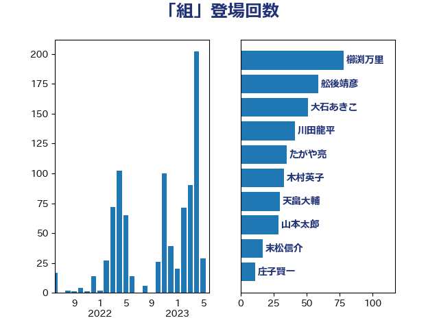

単語「組」

| 舩後靖彦 | れいわ新選組 | 44 回 |
| 櫛渕万里 | れいわ新選組 | 27 回 |
| 大石あきこ | れいわ新選組 | 21 回 |
| たがや亮 | れいわ新選組 | 19 回 |
| 木村英子 | れいわ新選組 | 19 回 |
| 川田龍平 | 立憲民主党 | 12 回 |
| 萩生田光一 | 自由民主党 | 8 回 |
| 足立康史 | 日本維新の会 | 8 回 |
| 平木大作 | 公明党 | 7 回 |
| 田村憲久 | 自由民主党 | 7 回 |
| 中根一幸 | 自由民主党 | 6 回 |
| 小西洋之 | 立憲民主党 | 6 回 |
| 庄子賢一 | 公明党 | 6 回 |
| 金子恭之 | 自由民主党 | 6 回 |
| 阿達雅志 | 自由民主党 | 6 回 |
| 青木愛 | 立憲民主党 | 6 回 |
| 山本太郎 | れいわ新選組 | 5 回 |
| 太田房江 | 自由民主党 | 4 回 |
| 小宮山泰子 | 立憲民主党 | 4 回 |
| 後藤茂之 | 自由民主党 | 4 回 |
| 辻元清美 | 立憲民主党 | 4 回 |
| 野田聖子 | 自由民主党 | 4 回 |
| 上田清司 | 国民民主党 | 3 回 |
| 後藤祐一 | 立憲民主党 | 3 回 |
| 柴田巧 | 日本維新の会 | 3 回 |
| 田名部匡代 | 立憲民主党 | 3 回 |
| 田島麻衣子 | 立憲民主党 | 3 回 |
| 田村まみ | 国民民主党 | 3 回 |
| 紙智子 | 日本共産党 | 3 回 |
| 重徳和彦 | 立憲民主党 | 3 回 |
| 串田誠一 | 日本維新の会 | 2 回 |
| 伊藤孝江 | 公明党 | 2 回 |
| 嘉田由紀子 | 無所属 | 2 回 |
| 大西健介 | 立憲民主党 | 2 回 |
| 山添拓 | 日本共産党 | 2 回 |
| 松本尚 | 自由民主党 | 2 回 |
| 根本匠 | 自由民主党 | 2 回 |
| 渡辺周 | 立憲民主党 | 2 回 |
| 田村智子 | 日本共産党 | 2 回 |
| 石井苗子 | 日本維新の会 | 2 回 |
| 米山隆一 | 立憲民主党 | 2 回 |
| 若宮健嗣 | 自由民主党 | 2 回 |
| 若松謙維 | 公明党 | 2 回 |
| 茂木敏充 | 自由民主党 | 2 回 |
| 蓮舫 | 立憲民主党 | 2 回 |
| 鈴木俊一 | 自由民主党 | 2 回 |
| 須藤元気 | 無所属 | 2 回 |
| 高木かおり | 日本維新の会 | 2 回 |
| 麻生太郎 | 自由民主党 | 2 回 |
| 三原じゅん子 | 自由民主党 | 1 回 |
| 伊藤孝恵 | 国民民主党 | 1 回 |
| 北村経夫 | 自由民主党 | 1 回 |
| 古川俊治 | 自由民主党 | 1 回 |
| 城井崇 | 立憲民主党 | 1 回 |
| 堀内詔子 | 自由民主党 | 1 回 |
| 天畠大輔 | れいわ新選組 | 1 回 |
| 宮本徹 | 日本共産党 | 1 回 |
| 寺田学 | 立憲民主党 | 1 回 |
| 寺田静 | 無所属 | 1 回 |
| 山口壯 | 自由民主党 | 1 回 |
| 山口那津男 | 公明党 | 1 回 |
| 岸真紀子 | 立憲民主党 | 1 回 |
| 市村浩一郎 | 日本維新の会 | 1 回 |
| 徳永久志 | 立憲民主党 | 1 回 |
| 斎藤嘉隆 | 立憲民主党 | 1 回 |
| 新垣邦男 | 立憲民主党 | 1 回 |
| 有村治子 | 自由民主党 | 1 回 |
| 木村次郎 | 自由民主党 | 1 回 |
| 東徹 | 日本維新の会 | 1 回 |
| 松沢成文 | 日本維新の会 | 1 回 |
| 梅谷守 | 立憲民主党 | 1 回 |
| 梶山弘志 | 自由民主党 | 1 回 |
| 武井俊輔 | 自由民主党 | 1 回 |
| 河野義博 | 公明党 | 1 回 |
| 泉健太 | 立憲民主党 | 1 回 |
| 浜口誠 | 国民民主党 | 1 回 |
| 浮島智子 | 公明党 | 1 回 |
| 石原正敬 | 自由民主党 | 1 回 |
| 石川大我 | 立憲民主党 | 1 回 |
| 石橋通宏 | 立憲民主党 | 1 回 |
| 神津たけし | 立憲民主党 | 1 回 |
| 福山哲郎 | 立憲民主党 | 1 回 |
| 福岡資麿 | 自由民主党 | 1 回 |
| 秋野公造 | 公明党 | 1 回 |
| 穂坂泰 | 自由民主党 | 1 回 |
| 緒方林太郎 | 無所属 | 1 回 |
| 角田秀穂 | 公明党 | 1 回 |
| 長友慎治 | 国民民主党 | 1 回 |
| 長浜博行 | 無所属 | 1 回 |
| 音喜多駿 | 日本維新の会 | 1 回 |
| 高橋千鶴子 | 日本共産党 | 1 回 |